Stat 470/670 Lecture 10: Robust regression
Julia Fukuyama
September 20, 2018
Robust regression
Reading: Cleveland pp. 110-119.
Supplemental reading
The data set dating (in lattice.RData) contains paired observations giving the estimated ages of 19 coral samples in thousands of years using both carbon dating (the traditional method) and thorium dating (a modern and purportedly more accurate method.) What’s the difference between these two methods?
library(tidyverse)
library(ggplot2)
library(broom)
library(viridis)
load("../../datasets/lattice.RData")
ggplot(dating, aes(x = carbon, y = thorium - carbon)) +
geom_point()
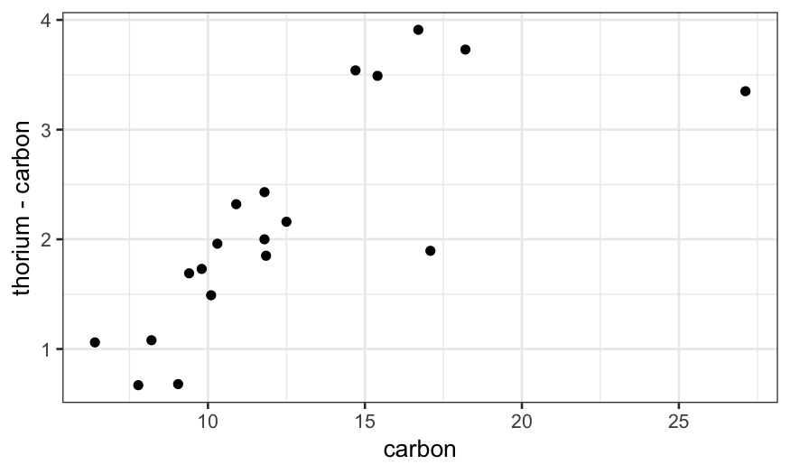
Last time, we saw that the linear regression line doesn't follow the data well, seemingly because the couple of outliers with high carbon values are dragging the line down. We also saw that robust regression fixes this problem.
library(MASS)
dating = dating %>% mutate(diff = thorium - carbon)
dating.lm = lm(diff ~ carbon, data = dating)
dating.rlm.huber = rlm(diff ~ carbon, data = dating, psi = psi.huber, maxit = 100)
dating.rlm.bisquare = rlm(diff ~ carbon, data = dating, psi = psi.bisquare)
ggplot(dating) +
## raw data
geom_point(aes(x = carbon, y = diff)) +
## rlm bisquare fit
geom_line(aes(x = carbon, y = dating.rlm.bisquare$fitted.values), color = 'red') +
## rlm huber fit
geom_line(aes(x = carbon, y = .fitted), color = 'orange', data = augment(dating.rlm.huber)) +
## lm fit
geom_line(aes(x = carbon, y = .fitted), data = augment(dating.lm), color = 'blue')
Robust regression: Details for Tukey's Bisquare
Overall idea: use weighted regression and down-weight the outliers.
We use the bisquare weight function to down-weight the outliers:
\[
B(u) = \begin{cases}
(1 - u^2)^2 & |u| < 1\\
0 & |u| >= 1
\end{cases}
\]
The robustness weights are then defined as
\[
r_i = B\left(\frac{\hat \varepsilon_i}{ks}\right)
\]
where \(s = \text{median}(|\hat \varepsilon_i|)\) and \(k\) is a parameter that you can choose. Standard according to Cleveland is 6, but in R the default is 4.685.
Notes:
If the errors are actually normal, \(6s\) corresponds to about \(4 \sigma\), and \(4.685s\) corresponds to about \(3 \sigma\) (the standard deviation of a normal distribution is 1.48 times the MAD).
The \(ks\) in the denominator is a tunable parameter that you can change, but the standard values are chosen because they lead to good efficiency when the errors are normally distributed.
Iteratively re-weighted least squares
Algorithm for robust regression:
- Start with an estimate of the regression line, e.g. standard least squares
Repeat until convergence:
Compute robustness weights based on the estimated regression line.
Perform weighted least squares with the robustness weights to get a new estimate of the regression line.
Example
dating.rlm.0 = lm(diff ~ carbon, data = dating)
ggplot(dating) +
geom_point(aes(x = carbon, y = diff)) +
geom_line(aes(x = carbon, y = dating.rlm.0$fitted.values), color = 'red') +
ylim(c(0,7))
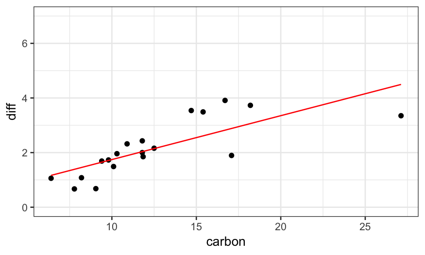
dating.rlm.1 = rlm(diff ~ carbon, data = dating, maxit = 1, psi = psi.bisquare)
ggplot(dating) +
geom_point(aes(x = carbon, y = diff)) +
geom_line(aes(x = carbon, y = dating.rlm.1$fitted.values), color = 'red') +
ylim(c(0,7))
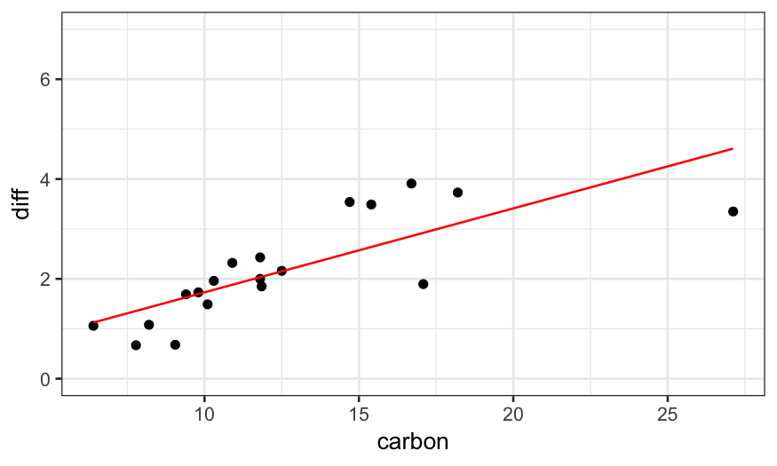
dating.rlm.2 = rlm(diff ~ carbon, data = dating, maxit = 2, psi = psi.bisquare)
ggplot(dating) +
geom_point(aes(x = carbon, y = diff)) +
geom_line(aes(x = carbon, y = dating.rlm.2$fitted.values), color = 'red') +
ylim(c(0,7))
dating.rlm.3 = rlm(diff ~ carbon, data = dating, maxit = 3, psi = psi.bisquare)
ggplot(dating) +
geom_point(aes(x = carbon, y = diff)) +
geom_line(aes(x = carbon, y = dating.rlm.3$fitted.values), color = 'red') +
ylim(c(0,7))
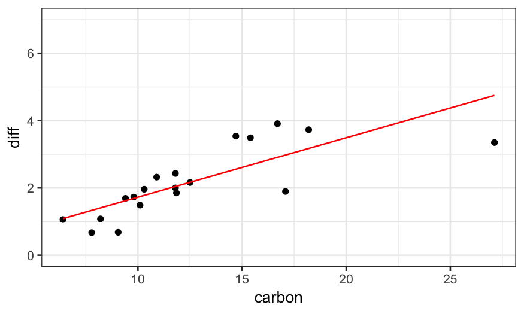
dating.rlm.11 = rlm(diff ~ carbon, data = dating, maxit = 11, psi = psi.bisquare)
ggplot(dating) +
geom_point(aes(x = carbon, y = diff)) +
geom_line(aes(x = carbon, y = dating.rlm.11$fitted.values), color = 'red') +
ylim(c(0,7))
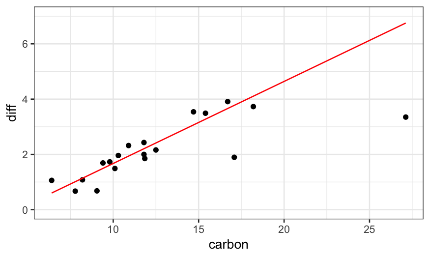
dating.rlm.12 = rlm(diff ~ carbon, data = dating, maxit = 12, psi = psi.bisquare)
ggplot(dating) +
geom_point(aes(x = carbon, y = diff)) +
geom_line(aes(x = carbon, y = dating.rlm.12$fitted.values), color = 'red') +
ylim(c(0,7))
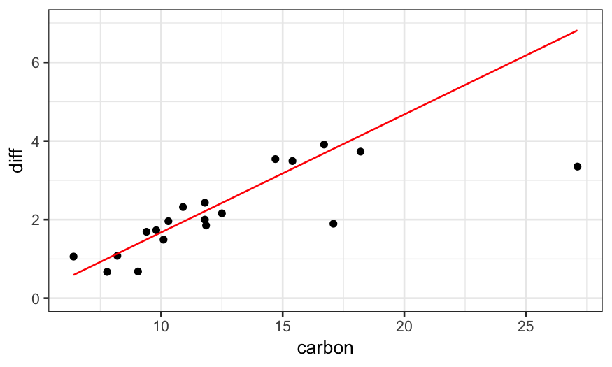
To see how the algorithm gets to the final fit, we can solve for the fits for all iterations between 1 and 15 and plot them:
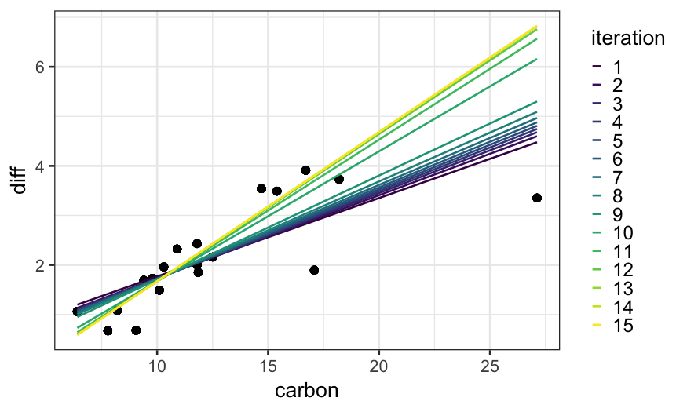
Huber version of robust regression
Same idea as Tukey's bisquare, but with a different definition of robustness weights.
For Huber, we use robustness weights
\[
r_i = \begin{cases}
1 & \hat \varepsilon_i < k \\
k / |\hat \varepsilon_i| & \hat \varepsilon_i \ge k
\end{cases}
\]
Note that these robustness weights are never exactly equal to zero.
Penalty interpretation
The presentation here and in Cleveland has been in terms of down-weighting outliers.
We can also think of the robust regression techniques as being modifications of least squares where the penalty changes.
For least squares, we find \(\beta_0\) and \(\beta_1\) to minimize
\[
\sum_{i=1}^n (y_i - (\beta_0 + \beta_1 x_i))^2
\]
For the robust methods, we change the square to something else, finding \(\beta_0\) and \(\beta_1\) to minimize
\[
\sum_{i=1}^n p(y_i - (\beta_0 + \beta_1 x_i))
\]
For robust regression with Tukey's bisquare, we take \[
p_B(e) = \begin{cases}
\frac{k^2}{6} \left[ 1 - (1 - (e/k)^2)^3 \right] & |e| < k \\
k^2 / 6 & |e| \ge k
\end{cases}
\]
For the Huber version of robust regression, we take \[
p_H(e) = \begin{cases}
\frac{1}{2} e^2 & |e| < k \\
k |e| - \frac{1}{2} k^2 & |e| \ge k
\end{cases}
\]
More useful is to look at the penalty functions:
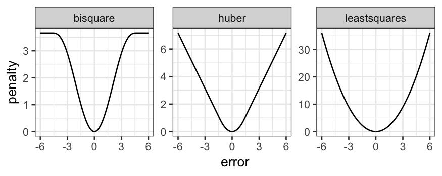
Comparison of the two methods
Bisquare:
Can completely remove the influnce of outliers from the regression line (the weight function is equal to \(0\) for outliers more than \(3\) or \(4\) standard deviations).
Doesn't have a unique solution, can get stuck in local optima, sometimes helps to give it a good initialization point.
Huber:
Never completely removes the influence of outliers from the regression line (weight function is never equal to \(0\)).
Has a unique solution, no need to worry about local optima or good starting points.
Other methods have other definitions of the weight function and allow you to make different tradeoffs between tractability and outlier removal.
Finishing up the dating example
We wanted to know about the relationship between the two dating methods. We have a robust fit, but we still need to check whether it fits the main part of the data well. We saw the residual plot last time, and we can check normality of the residuals with a Q-Normal plot.
ggplot(augment(dating.rlm.bisquare)) +
stat_qq(aes(sample = .resid)) +
geom_abline(aes(intercept = median(.resid), slope = mad(.resid)))
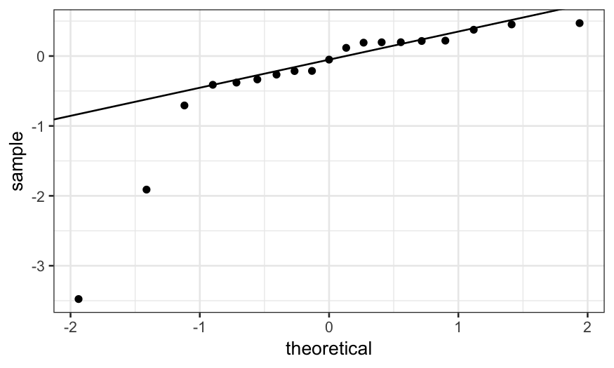
We see that, apart from the outliers, the residuals follow a line. That means that the majority of the data seem to follow a normal distribution, and we're happy with the fit.
dating.rlm.bisquare
## Call:
## rlm(formula = diff ~ carbon, data = dating, psi = psi.bisquare)
## Converged in 15 iterations
##
## Coefficients:
## (Intercept) carbon
## -1.3373450 0.3010268
##
## Degrees of freedom: 19 total; 17 residual
## Scale estimate: 0.394
Examples of smoothers to support visualization
Smoothers can be very helpful visualization tools for comparing bivariate models.
As an example, consider the ethanol dataset in lattice.RData. The data are from an experiment studying exhaust from a one-cylinder engine fueled by ethanol. The variables in the dataset are
NOx: Concentration of NO plus NO2 (NOx), divided by the amount of work the engine did.
E: The equivalence ratio at which the engine was run, measuring the richness of the mixture of air and fuel (morue fuel = higher E).
C: The compression ratio to which the engine was set, that is, the maximum volume inside the cylinder (volume with piston retracted) divided by the minimum volume inside the cylinder (volume with piston at maximal penetration).
We'll look at this more when we start trivariate data in earnest, but for now, note that there are only five values of C in this experiment:
table(ethanol$C)
##
## 7.5 9 12 15 18
## 22 17 14 19 16
Because of this, we are going to treat C as a factor variable for now. Let's make it into an ordered factor:
ethanol = ethanol %>% mutate(Cfac = factor(C, levels = sort(unique(C)), ordered = TRUE))
Therefore, we can treat C as a factor variable and ask what the relationship is between NOx and E for different values of C.
How would we investigate this?
We've seen faceting already:
ggplot(ethanol) + geom_point(aes(x = E, y = NOx)) + facet_wrap(~ Cfac)
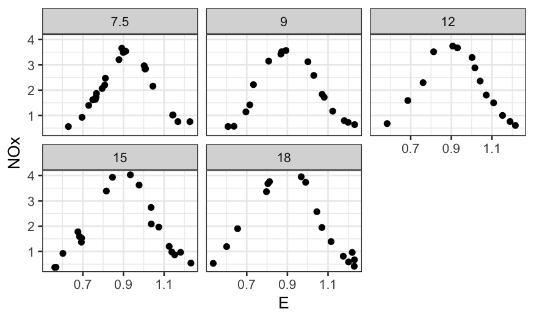
With the faceting it's hard to see differences between the curves. What if we remove the faceting and label the different values of C by color?
ggplot(ethanol, aes(x = E, y = NOx, color = Cfac)) +
geom_point()
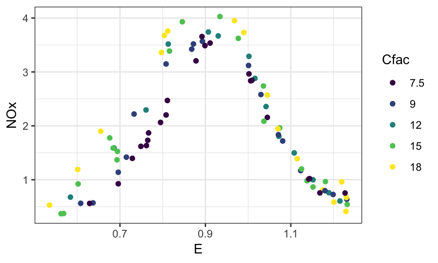
What about if we add smoothers?
ggplot(ethanol, aes(x = E, y = NOx, color = Cfac)) +
geom_point() +
stat_smooth(method = "loess", se = FALSE)
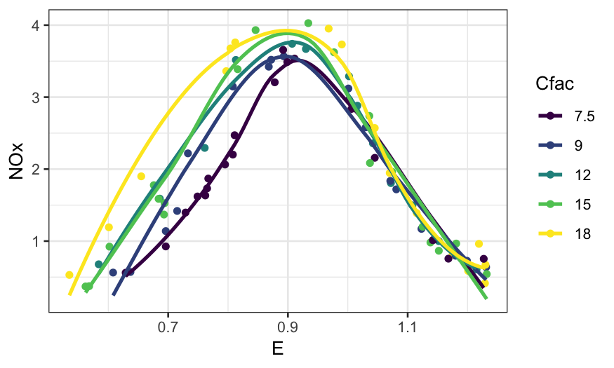
Example: Diamonds data
Remember our good friend the diamonds dataset. The variables we'll be interested in for now are:
price: How much the diamond sold for.
carat: How big the diamond is.
clarity: How clear it is. This is coded is an ordered factor (this is what <ord> at the top of the clarity column means when you print out the diamonds tibble) , higher clarities tend to be more rare and expensive.
We've already looked at the relationship between price and carat, and we'd like to see how the relationship varies with clarity. Let's try investigating in a couple of ways.
First try faceting out by clarity:
ggplot(diamonds, aes(x = carat, y = price)) + geom_point() + facet_wrap(~ clarity)
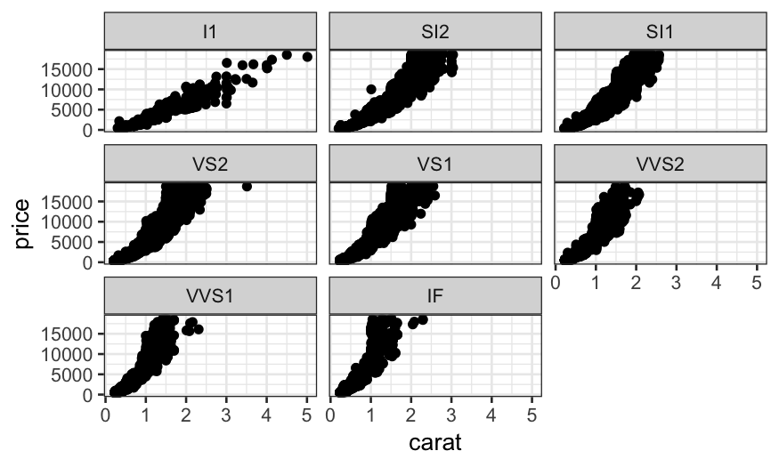
We notice that the relationship is hollow up, and so we remember what we learned about straightening out relationships and try log-transforming price.
ggplot(diamonds, aes(x = carat, y = log10(price))) + geom_point() + facet_wrap(~ clarity)
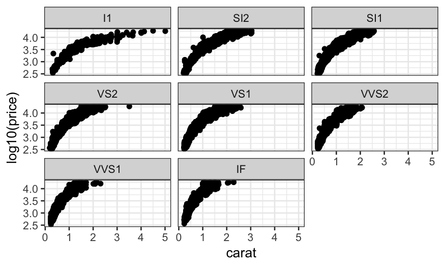
log-transform is too much (now it's hollow down), so we try an intermediate transform, the square root.
ggplot(diamonds, aes(x = carat, y = sqrt(price))) +
geom_point() + facet_wrap(~ clarity)
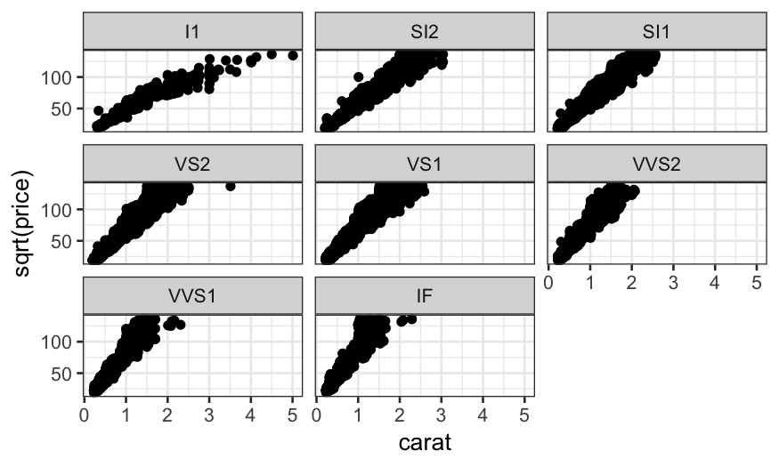
The square root does a good job at straightening out the relationship. Note that we could also have used the square of carat to predict price, which would have also straightened out the relationship and which might be more interpretable. We'll stick with square root of price for now though.
The problem with faceting out is that it's hard to compare the slopes. We can try plotting everything together and using color to indicate clarity.
ggplot(diamonds, aes(x = carat, y = sqrt(price), color = clarity)) + geom_point()
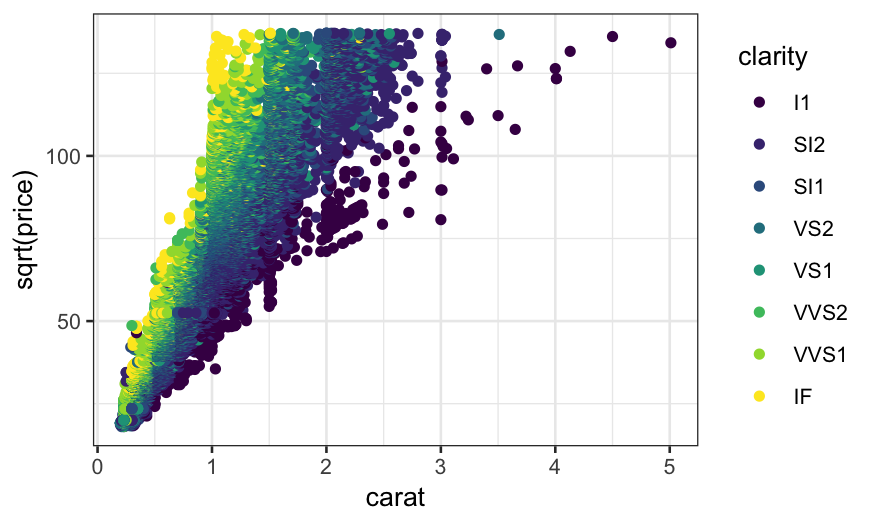
This helps a bit, and we see the general trend that the slope increases with clarity, but there's still a lot of overplotting and it is hard to compare the relationships. Let's try adding a linear smoother.
ggplot(diamonds, aes(x = carat, y = sqrt(price), color = clarity)) +
geom_point() +
stat_smooth(method = "lm", se = FALSE)
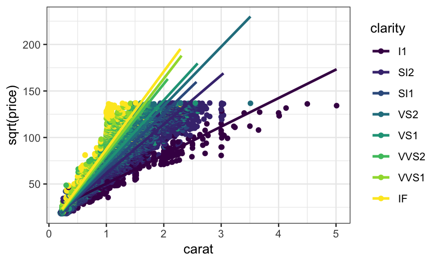
There seemed to be some outliers, particularly in the low clarities, so we might want to try a robust linear smoother. This changes the slopes slightly.
ggplot(diamonds, aes(x = carat, y = sqrt(price), color = clarity)) +
geom_point() +
stat_smooth(method = "rlm", method.args = list(psi = psi.bisquare, maxit = 40), se = FALSE)
With either of the smoothers, we can see much more clearly how the relationship changes with clarity. The slopes for the top three levels of clarity are virtually identical, the lowest clarity has the lowest slope, and the intermediate levels have approximately equally spaced slopes. We see this more clearly if we take away the points.
ggplot(diamonds, aes(x = carat, y = sqrt(price), color = clarity)) +
stat_smooth(method = "rlm", method.args = list(psi = psi.bisquare, maxit = 40), se = FALSE)
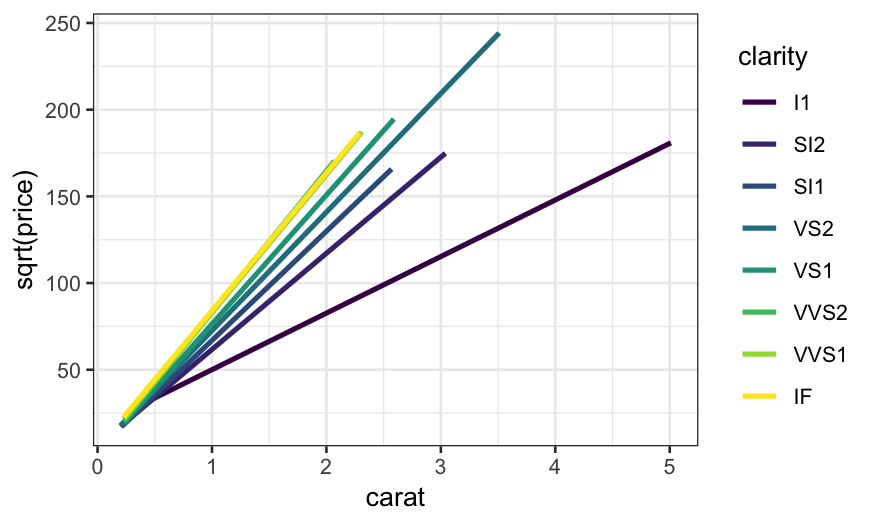